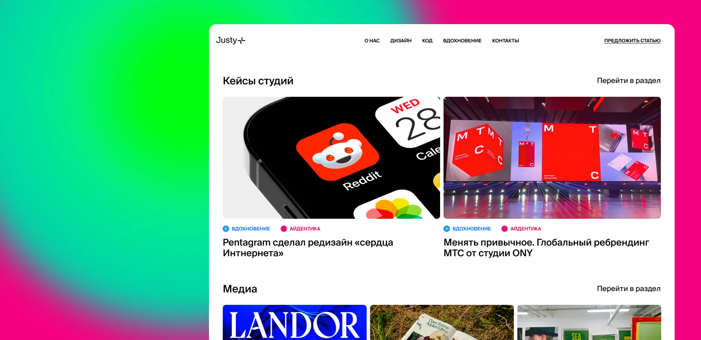
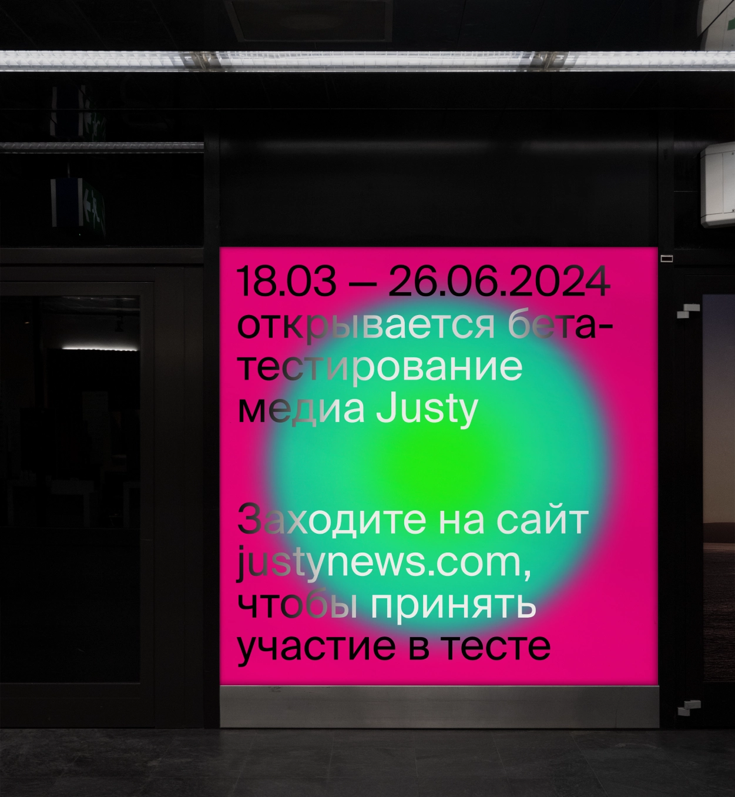
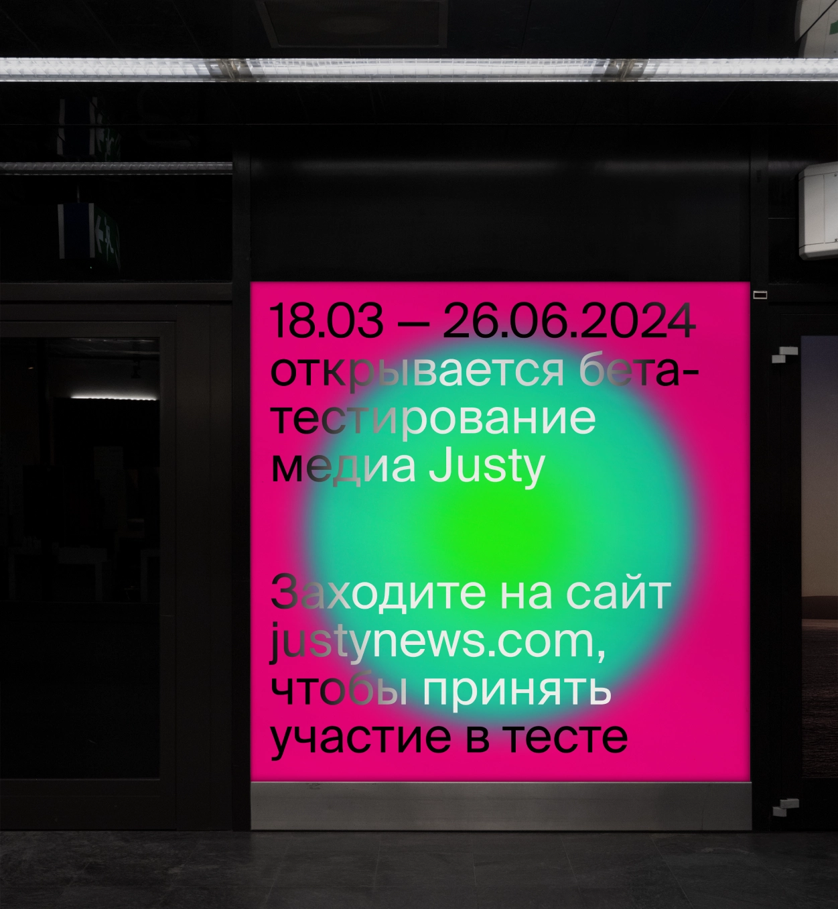

Suisse Intl
Аа
Бб
Вв
Гг
Дд
Ее
Ёё
Жж
Зз
Ии
Йй
Кк
Лл
Мм
Нн
Оо
Пп
Рр
Сс
Тт
Уу
Фф
Хх
Цц
Чч
Шш
Щщ
Ъъ
Ьь
Ээ
Юю
Яя
1
2
3
4
5
6
7
8
9
0
!
@
£
$
%
^
&
*
;
:
?
|
.
,
+
-
=
«
»
( )
Regular
Medium
SemiBold
Швейцарский гротекс объединят стильную классику и высокое качество дизайна. Гротекс является единственным и основным шрифтом в веб-дизайне, а также используется на 98% в айдентикейне
Пример использования шрифта в качестве основного в веб-дизайне
 
Suisse Intl Book
Аа
Бб
Вв
Гг
Дд
Ее
Ёё
Жж
Зз
Ии
Йй
Кк
Лл
Мм
Нн
Оо
Пп
Рр
Сс
Тт
Уу
Фф
Хх
Цц
Чч
Шш
Щщ
Ъъ
Ьь
Ээ
Юю
Яя
1
2
3
4
5
6
7
8
9
0
!
@
£
$
%
^
&
*
;
:
?
|
.
,
+
-
=
«
»
( )
Light
Bold
Начертание используется в качестве добавочного в айдентике в деталях, например, в виде небольших надписей на поверхности носителя. Никогда не используется в качестве основного шрифта и не служит заголовком

Пример использования Suisse Intl Book на черной плашке альбома

Пример использования Suisse Intl Book на черной плашке альбома справа вверху и на черной открытке слева внизу
Type system
primary headline
Медиа для дизайнеров и веб-разработчиков.
Suisse Intl, Regular, 54px / 115%
secondary headline
Дизайн, код, вдохновение
Suisse Intl, Medium, 35px / auto
headline 3
Предоставляем мнение экспертов
Suisse Intl, Regular, 30px / auto
headline 4
Дизайн, код, вдохновение
Suisse Intl, Medium, 27px / auto
article titles
Фильтруем информацию, показывая только нужное
Suisse Intl, Medium, 21px / 130%
body
Типографика, нейросети, необходимые дизайнеру, мокапы, книги, а также советы по выбору софтае
Suisse Intl, Regular, 17px / 130%
paragraph body
Типографика, нейросети, необходимые дизайнеру, мокапы, книги, а также советы по выбору софтае
Suisse Intl, Regular, 17px / 130%
fluffy button, footer menu
Узнать о запуске!
Suisse Intl, Medium, 17px / auto
author information
Удод Константин
Suisse Intl, SemiBold, 17px / 115%
header menu, photo captions
подписаться
Suisse Intl, Medium, 14px / auto
menubar description
Совместное использование миксинов и функций
Suisse Intl, Regular, 12px / 130%